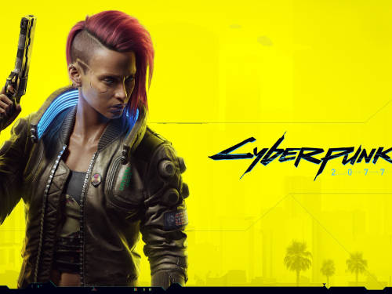
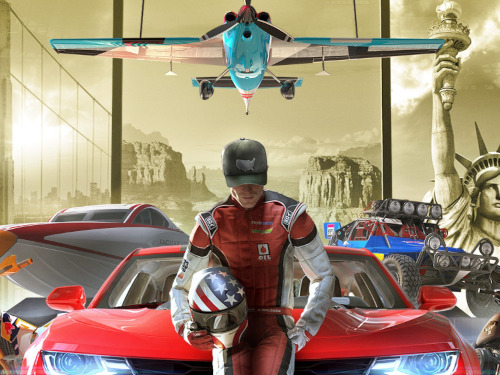
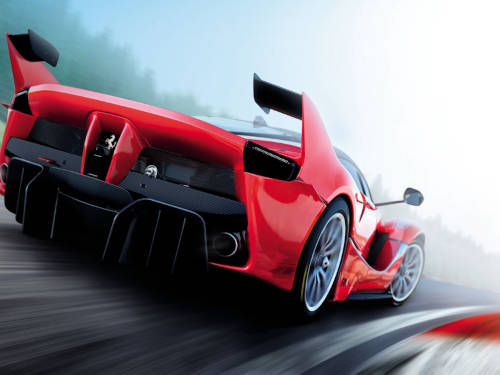

Lista de Games Favoritos
- Jogos De Ação Aventura
- 1 GTAV Mais

Boas-vindas a Los Santos
Quando um tratante inexperiente, um ladrão de bancos aposentado e um psicopata aterrorizante se envolvem com algumas das figuras mais assustadoras e problemáticas do submundo do crime, do governo dos EUA e da indústria do entretenimento, eles precisam realizar uma série de golpes ousados para sobreviver em uma cidade implacável onde não podem confiar em ninguém, nem mesmo um no outro.
- 1 Watch Dogs 2
Watch_Dogs 2 é ambientado na baía de São Francisco e se desenrola sob a pele de Marcus Holloway, um hacker que foi vítima dos algoritmos de previsão de crime do ctOS 2.0 e acusado injustamente de um delito que não cometeu. Agora, ele pretende desligar o sistema de uma vez por todas, e para isso deverá usar todo o seu conhecimento para invadir tanto a rede que controla a infraestrutura da cidade quanto os dispositivos de seus moradores, permitindo que ele tenha total poder sobre drones, carros, portas, câmeras de segurança e outros recursos. Durante a trama, Marcus passa a integrar o grupo coletivista de hackers DedSec.[4]
- 1 Cyberpunk 2077

Night City é uma megacidade americana localizada no Estado Livre da Califórnia do Norte, controlada por corporações – legislações locais e nacionais não têm efeito na região. Existe um conflito interno constante entre gangues e outras entidades que procuram dominar a cidade. Night City depende da robótica para todos os aspectos diários como coleta de resíduos, manutenção e transportes públicos.[35] A sua identidade visual é resultado de quatro eras de austero Entropismo, Brega colorido, opulento Neo-Brega e Neo-Militarismo forçado.[36] A internet é administrada pelo exército e corporações.[18]
- 2. Jogos de Corrida
- 2 The Crew 2

The Crew 2 é um jogo eletrônico de corrida, desenvolvido pela Ivory Tower e publicado pela Ubisoft. Foi lançado em 29 de junho de 2018 para Microsoft Windows, PlayStation 4 e Xbox One,[1] e em 25 de março de 2020 para Google Stadia.[2] É a sequência de seu título antecessor, The Crew de 2014. Possui um ambiente de mundo aberto persistente[nota 2] para vagar livremente em uma escala reduzida do mapa dos Estados Unidos. O jogo permite que os jogadores controlem uma variedade de veículos, incluindo carros, motocicletas, barcos, aviões e hovercrafts
- 2 Forza Horizon 5
Forza Horizon 5 é um jogo eletrônico de corrida ambientado em um ambiente de mundo aberto sediado no México.[1] O jogo tem o maior mapa de toda a série Forza Horizon, sendo 50% maior do que o de Forza Horizon 4, além de também ter o ponto mais alto da série Horizon.[2][3] O mapa foi descrito pelo diretor criativo Mike Brown como um dos mapas mais diversificados da série Forza Horizon que a equipe já construiu.[4] O mapa contém áreas como um vulcão ativo da caldeira, selvas e praias, antigos templos maias e cidades como Guanajuato. Os jogadores podem explorar o mundo aberto livremente, embora também possam competir em corridas multijogador e completar o modo campanha. Tanto os carros apresentados no jogo quanto o personagem do jogador podem ser amplamente personalizados.[5] O jogo é o primeiro da franquia a oferecer suporte a ray tracing em carros (embora isso só esteja disponível em ForzaVista).[6]
- 2 Assetto Corsa

Assetto Corsa é um jogo eletrônico de simulação de corrida desenvolvido pela italiana Kunos Simulazioni. Ele foi projetado com ênfase em uma experiência de corrida realista, com suporte para personalização e modabilidade extensivas. O jogo foi lançado para Microsoft Windows pela primeira vez através do programa Steam Early Access em 8 de novembro de 2013[1] e oficialmente saiu do Early Access como versão final em 19 de dezembro de 2014.[2] O jogo foi lançado para consoles PlayStation 4 e Xbox One em 26 e 30 de agosto de 2016 na Europa e América do Norte, respectivamente.
- 4.Jogos de Tiro
- 4 Call of Duty: Warzone
Call of Duty: Warzone é um jogo eletrônico free-to-play do gênero battle royale desenvolvido pela Infinity Ward e Raven Software e publicado pela Activision.[1] Lançado em 10 de março de 2020 para Microsoft Windows, PlayStation 4 e Xbox One, o jogo faz parte do título Call of Duty: Modern Warfare (2019), mas não requer compra. Warzone permite um combate em um modo multijogador on-line entre 150 jogadores na cidade fictícia de Verdansk, que é vagamente baseada na cidade de Donetsk, no leste da Ucrânia.[2] Ele apresenta uma progressão de plataforma-cruzada entre os dois jogos.
- 4 Battlefield 2042
Battlefield 2042 é um jogo eletrônico de tiro em primeira pessoa desenvolvido pela DICE e publicado pela Electronic Arts. É o décimo sétimo título da série Battlefield e a sequência de Battlefield V, de 2018. Foi lançado em 19 de novembro de 2021, para Microsoft Windows, PlayStation 4, PlayStation 5, Xbox One e Xbox Series X/S. Ao contrário dos jogos mais recentes da franquia, Battlefield 2042 é exclusivamente multijogador e não possui uma campanha para um jogador. Além disso, o jogo conta com jogabilidade multiplataforma, elemento inédito na série.
- 4 Fortnite
Fortnite é um jogo eletrônico multijogador online revelado originalmente em 2011, desenvolvido pela Epic Games e lançado como diferentes modos de jogo que compartilham a mesma jogabilidade e motor gráfico de jogo. Os modos de jogo incluem Fortnite: Save the World, um jogo cooperativo pay-to-play de sobrevivência para até quatro jogadores, que devem lutar contra carcaças (zumbis) e defender objetos com fortificações que eles podem construir, e Fortnite Battle Royale, um jogo free-to-play do gênero battle royale, onde até 100 jogadores lutam em espaços cada vez menores para serem a última pessoa ou time vencedor. Ambos os modos de jogo foram lançados em 2017 como títulos de acesso antecipado; Save the World está disponível apenas para Microsoft Windows, PlayStation 4 e Xbox One, enquanto Battle Royale foi lançado para essas mesmas plataformas, incluindo o Nintendo Switch e dispositivos Android. Em 2020, foi adicionado para a nova geração de consoles PlayStation 5 e Xbox Series X/S.